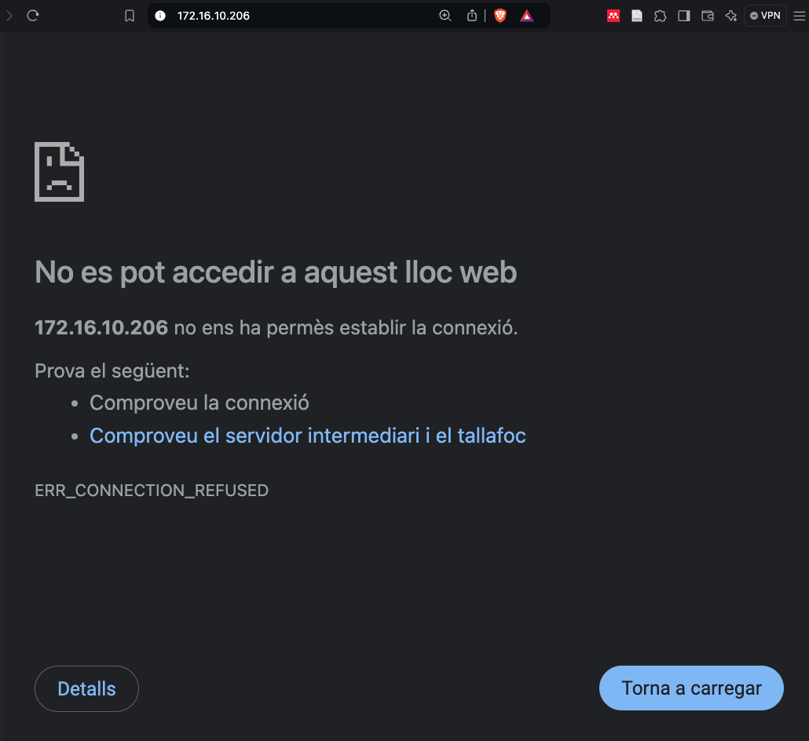
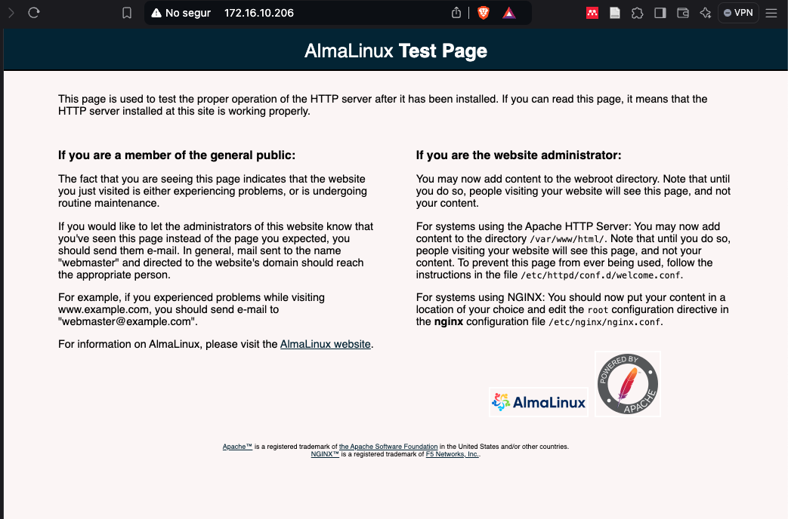

Instal·lant i configurant Apache
El primer pas per desplegar un servidor web amb WordPress és instal·lar i configurar un servidor web. Necessitem la versió 2.4 o superior d'Apache per a la nostra instal·lació.
-
Comprovem si el paquet httpd està disponible:
dnf search httpdLa sortida hauria de mostrar el paquet httpd i les seves dependències.
Last metadata expiration check: 0:00:00 ago on Tue 15 Feb 2022 09:00:00 PM UTC. ============== Name Exactly Matched: httpd ============== httpd.x86_64 : Apache HTTP ServerSi el paquet esta disponible, primer revisarem la informació del paquet amb la comanda
dnf info httpd.Installed Packages Name : httpd Version : 2.4.57 Release : 11.el9_4.1 Architecture : aarch64 Size : 155 k Source : httpd-2.4.57-11.el9_4.1.src.rpm Repository : @System From repo : appstream Summary : Apache HTTP Server URL : https://httpd.apache.org/ License : ASL 2.0 Description : The Apache HTTP Server is a powerful, efficient, and extensible : web server.Un cop ens assegurem que el paquet està disponible amb la versió correcta, procedirem a la instal·lació.
-
Instal·lem el dimoni httpd:
dnf install httpd -y -
Comprovem l'estat del servei amb
systemctl:systemctl status httpd -
Visualitzem els fitxers de configuració del servei httpd:
less /usr/lib/systemd/system/httpd.service[Unit] Description=The Apache HTTP Server Wants=httpd-init.service After=network.target remote-fs.target nss-lookup.target httpd-init.service Documentation=man:httpd.service(8) [Service] Type=notify Environment=LANG=C ExecStart=/usr/sbin/httpd $OPTIONS -DFOREGROUND ExecReload=/usr/sbin/httpd $OPTIONS -k graceful # Send SIGWINCH for graceful stop KillSignal=SIGWINCH KillMode=mixed PrivateTmp=true OOMPolicy=continue [Install] WantedBy=multi-user.targetAquest fitxer de configuració conté instruccions com:
ExecStart=/usr/sbin/httpd $OPTIONS -DFOREGROUND: Defineix la comanda que s'utilitza per iniciar el servei. El mode foreground permet veure la sortida al terminal, útil per a la depuració.ExecReload=/usr/sbin/httpd $OPTIONS -k graceful: Permet recarregar la configuració del servidor sense interrompre les connexions actives, garantint que els canvis es puguin aplicar de manera controlada.KillSignal=SIGWINCH: El senyal que s'envia per aturar el servei, assegurant una parada segura.PrivateTmp=true: Millora la seguretat creant un sistema de fitxers temporal privat per al servei.OOMPolicy=continue: Defineix el comportament del sistema en cas de manca de memòria, permetent que el servei continuï executant-se.
-
Habiliteu el servei per iniciar cada cop que el sistema arranqui:
systemctl enable httpd -
Arranqueu i comproveu l'estat del servei:
systemctl start httpd systemctl status httpd
Un cop aixecat el servei, podem comprovar que el servei està en marxa i funcionant correctament. Intenteu accedir al servidor web amb la vostra IP a través d'un navegador web. En el meu cas, la IP del servidor és :127.16.10.206. Recordeu que per veure la IP del vostre servidor podeu utilitzar la comanda ip a.

Observareu que no és possible accedir-hi i rebeu un missatge d'error ERR_CONNECTION_REFUSED. Això és normal, ja que AlmaLinux té un firewall activat per defecte que bloqueja el tràfic al port 80, que és el port per defecte del servidor web Apache.
systemctl status firewalld
● firewalld.service - firewalld - dynamic firewall daemon
Loaded: loaded (/usr/lib/systemd/system/firewalld.service; enabled; vendor preset: enabled)
Active: active (running) since Tue 2022-02-15 21:00:00 UTC; 1h 30min ago
Si desactiveu el servei de firewalld, podreu accedir al servidor web Apache. No obstant això, això no és una pràctica segura, ja que el firewall és una capa de seguretat important per protegir el vostre servidor.
systemctl stop firewalld

En aquest punt, podeu comprovar que el servidor web Apache està funcionant correctament.
Configuració del firewall
El firewall és un servei o programa que protegeix la xarxa del vostre servidor control·lant el tràfic de xarxa que entra i surt del servidor. Això és important per garantir que el vostre servidor sigui segur i protegit contra atacs maliciosos. Permetre només el tràfic necessari i bloquejar el tràfic no desitjat és una pràctica de seguretat recomanada per mantenir el vostre servidor segur. En aquest cas, necessitem permetre el tràfic HTTP (port 80) perquè el servidor web Apache sigui accessible des de l'exterior però bloquejar altres ports i serveis no necessaris.
En tots els sistmes linux el firewall es configura utilitzant les iptables. En el nostre cas, podem veure les regles amb la comanda iptables -L. Permetre el tràfic HTTP (port 80) amb les iptables seria:
iptables -A INPUT -m state --state NEW -m tcp -p tcp --dport 80 -j ACCEPT
iptables -A INPUT -m state --state NEW -m udp -p udp --dport 80 -j ACCEPT
on:
-A INPUT: Afegeix una regla a la cadena INPUT (paquets que entren al servidor).-m state --state NEW: Només s'aplica a paquets nous.-m tcp -p tcp: Només s'aplica a paquets TCP.-M udp -p udp: Només s'aplica a paquets UDP.--dport 80: Només s'aplica als paquets que arriben al port 80.-j ACCEPT: Accepta els paquets que compleixen les condicions anteriors.
Però, tenim eines que ens faciliten la tasca com firewalld o ufw. En aquest cas, utilitzarem firewalld. Firewalld és un firewall dinàmic per a sistemes Linux que proporciona una interfície de línia de comandes i una interfície gràfica per gestionar les regles del firewall. Firewalld té un programa de comandament anomenat firewall-cmd que us permet gestionar les regles del firewall de manera senzilla i eficaç. Per permetre el tràfic HTTP (port 80) amb firewalld, podeu utilitzar la comanda següent:
firewall-cmd --add-service=http --permanent
on:
--add-service=http: Afegeix una regla per permetre el tràfic HTTP.--permanent: Afegeix la regla de manera permanent, la qual cosa significa que es mantindrà després de reiniciar el sistema.
Per aplicar els canvis, cal recarregar el firewall amb la comanda següent:
firewall-cmd --reload
Amb aquesta configuració, el vostre firewall està configurat per permetre el tràfic HTTP (port 80) al vostre servidor. Per verificar que la configuració del firewall s'ha aplicat correctament i que el servei HTTP està habilitat, podeu utilitzar la següent comanda:
firewall-cmd --list-all
Aquesta comanda mostrarà la sortida amb informació detallada sobre la configuració actual del firewall. Per identificar si el servei HTTP està habilitat, busqueu la secció services i verifiqueu que aparegui el servei http com a un dels serveis habilitats.
La sortida hauria de semblar-se així:
public
target: default
icmp-block-inversion: no
interfaces:
sources:
services: cockpit dhcpv6-client http ssh
ports:
protocols:
forward: no
masquerade: no
forward-ports:
source-ports:
icmp-blocks:
rich rules:
En aquest exemple, podeu veure que el servei HTTP està habilitat, la qual cosa significa que el tràfic HTTP hauria de ser permès a través del firewall. A més a més, podeu veure altres serveis com el servei SSH, el servei DHCPv6-client i el servei Cockpit que també estan habilitats. Aquests serveis són necessaris per a la gestió del servidor i per a la connectivitat de xarxa.
Com deshabilitareu la regla per bloquejar el tràfic?
firewall-cmd --remove-service=http --permanent
firewall-cmd --reload